오늘캠핑 레시피
캠핑 가서
뭐 먹지?
캠핑 요리 101가지를 1분 영상으로. 집에서 해 갈 손질부터 버너·화로 하나로 만드는 법, 설거지 줄이는 먹는 법까지 담았어요.
레시피 101가지
 011:00한 냄비 국물캠핑 어묵탕추운 캠핑 밤, 국물 한 입이면 몸이 다 녹아요20분 · 2인분 · 쉬움
011:00한 냄비 국물캠핑 어묵탕추운 캠핑 밤, 국물 한 입이면 몸이 다 녹아요20분 · 2인분 · 쉬움 021:02숯불·화로 구이숯불 삼겹살캠핑 고기 굽기 정석20분 · 2인분 · 쉬움
021:02숯불·화로 구이숯불 삼겹살캠핑 고기 굽기 정석20분 · 2인분 · 쉬움 030:58한 냄비 국물캠핑 부대찌개한 냄비로 끝내는 저녁20분 · 3인분 · 쉬움
030:58한 냄비 국물캠핑 부대찌개한 냄비로 끝내는 저녁20분 · 3인분 · 쉬움 041:01한 냄비 국물캠핑 닭한마리추운 밤 몸 녹이는 한 냄비40분 · 3인분 · 보통
041:01한 냄비 국물캠핑 닭한마리추운 밤 몸 녹이는 한 냄비40분 · 3인분 · 보통 051:00면 요리캠핑 라면같은 라면, 두 배 맛있게10분 · 2인분 · 쉬움
051:00면 요리캠핑 라면같은 라면, 두 배 맛있게10분 · 2인분 · 쉬움 061:00밥·볶음밥코펠 밥 짓기캠핑 밥, 설익지 않게30분 · 2인분 · 보통
061:00밥·볶음밥코펠 밥 짓기캠핑 밥, 설익지 않게30분 · 2인분 · 보통 070:58아침·간편식캠핑 토스트철수하는 날 10분 아침10분 · 2인분 · 쉬움
070:58아침·간편식캠핑 토스트철수하는 날 10분 아침10분 · 2인분 · 쉬움 081:01더치오븐·호일 요리캠핑 수육냄비 하나로 촉촉한 보쌈50분 · 3인분 · 보통
081:01더치오븐·호일 요리캠핑 수육냄비 하나로 촉촉한 보쌈50분 · 3인분 · 보통 090:59모닥불 간식·디저트모닥불 군고구마불멍하며 굽는 겨울 간식40분 · 3인분 · 쉬움
090:59모닥불 간식·디저트모닥불 군고구마불멍하며 굽는 겨울 간식40분 · 3인분 · 쉬움 100:58모닥불 간식·디저트모닥불 스모어아이들이 제일 좋아하는 디저트5분 · 4인분 · 쉬움
100:58모닥불 간식·디저트모닥불 스모어아이들이 제일 좋아하는 디저트5분 · 4인분 · 쉬움 110:57따뜻한 음료캠핑 핫초코모닥불 앞 따뜻한 한 잔5분 · 2인분 · 쉬움
110:57따뜻한 음료캠핑 핫초코모닥불 앞 따뜻한 한 잔5분 · 2인분 · 쉬움 120:59한 냄비 국물캠핑 김치찌개밥 한 공기 뚝딱 국물25분 · 2인분 · 쉬움
120:59한 냄비 국물캠핑 김치찌개밥 한 공기 뚝딱 국물25분 · 2인분 · 쉬움 130:57한 냄비 국물캠핑 된장찌개얼린 육수로 끝내는 한 끼20분 · 2인분 · 쉬움140:56한 냄비 국물캠핑 샤브샤브끓는 육수에 살랑살랑20분 · 3인분 · 쉬움
130:57한 냄비 국물캠핑 된장찌개얼린 육수로 끝내는 한 끼20분 · 2인분 · 쉬움140:56한 냄비 국물캠핑 샤브샤브끓는 육수에 살랑살랑20분 · 3인분 · 쉬움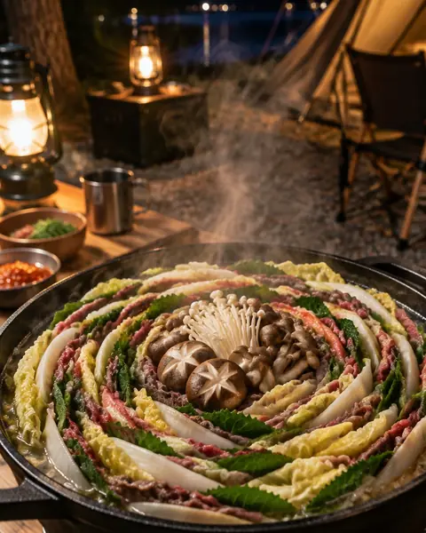
150:59한 냄비 국물캠핑 밀푀유나베집에서 쌓고 현장에선 불만25분 · 3인분 · 보통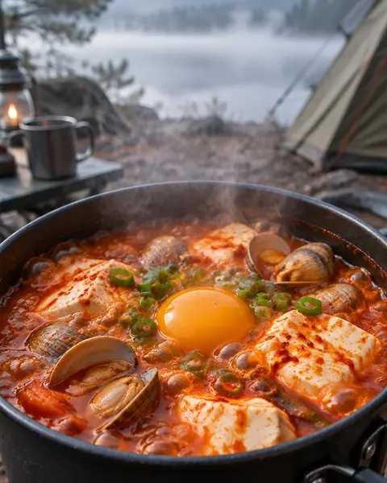
160:57한 냄비 국물캠핑 순두부찌개칼 없이 끓이는 1인 냄비15분 · 1인분 · 쉬움 170:57면 요리캠핑 칼국수냄비 하나로 끝내는 면 요리20분 · 2인분 · 쉬움
170:57면 요리캠핑 칼국수냄비 하나로 끝내는 면 요리20분 · 2인분 · 쉬움 180:54아침·간편식캠핑 떡국새해 아침, 캠핑장에서15분 · 2인분 · 쉬움
180:54아침·간편식캠핑 떡국새해 아침, 캠핑장에서15분 · 2인분 · 쉬움 190:56모닥불 간식·디저트모닥불 군밤타닥타닥 겨울 간식15분 · 3인분 · 쉬움
190:56모닥불 간식·디저트모닥불 군밤타닥타닥 겨울 간식15분 · 3인분 · 쉬움 200:56모닥불 간식·디저트캠핑 호떡꿀이 주르륵 겨울 간식15분 · 4인분 · 쉬움
200:56모닥불 간식·디저트캠핑 호떡꿀이 주르륵 겨울 간식15분 · 4인분 · 쉬움 210:59계절 특선겨울 굴찜제철 굴, 통째로 쪄 먹기15분 · 4인분 · 쉬움
210:59계절 특선겨울 굴찜제철 굴, 통째로 쪄 먹기15분 · 4인분 · 쉬움 220:58숯불·화로 구이캠핑 목살 스테이크겉은 바삭, 속은 촉촉20분 · 3인분 · 쉬움
220:58숯불·화로 구이캠핑 목살 스테이크겉은 바삭, 속은 촉촉20분 · 3인분 · 쉬움 230:59숯불·화로 구이캠핑 등심 스테이크무쇠팬 하나로 레스토랑처럼15분 · 2인분 · 보통
230:59숯불·화로 구이캠핑 등심 스테이크무쇠팬 하나로 레스토랑처럼15분 · 2인분 · 보통 240:56숯불·화로 구이캠핑 양갈비뼈째 들고 뜯는 맛20분 · 3인분 · 보통250:56숯불·화로 구이캠핑 닭다리 바비큐뚜껑 덮어 속까지 촉촉35분 · 3인분 · 보통
240:56숯불·화로 구이캠핑 양갈비뼈째 들고 뜯는 맛20분 · 3인분 · 보통250:56숯불·화로 구이캠핑 닭다리 바비큐뚜껑 덮어 속까지 촉촉35분 · 3인분 · 보통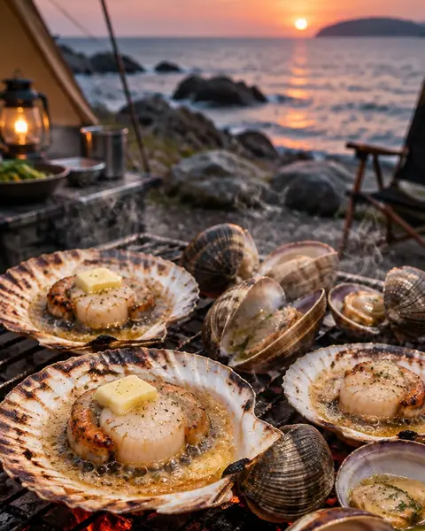
260:54숯불·화로 구이캠핑 조개구이입 벌리면 바로 한 입15분 · 3인분 · 쉬움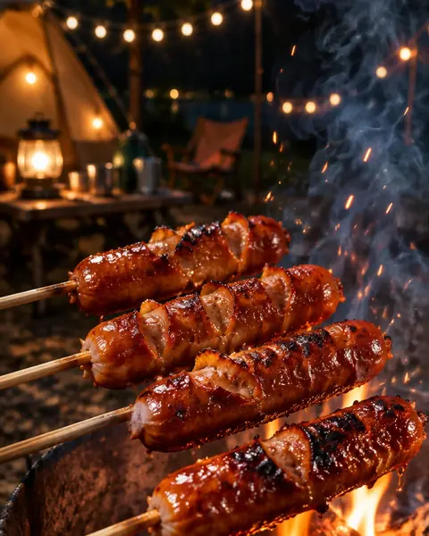
270:54숯불·화로 구이캠핑 소시지 구이꼬치에 꽂아 접시 없이10분 · 4인분 · 쉬움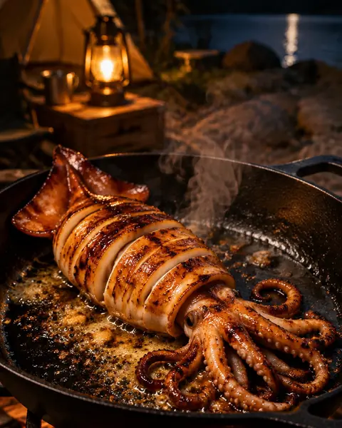
280:54숯불·화로 구이통오징어 버터구이가위로 잘라 먹는 밤 안주15분 · 2인분 · 쉬움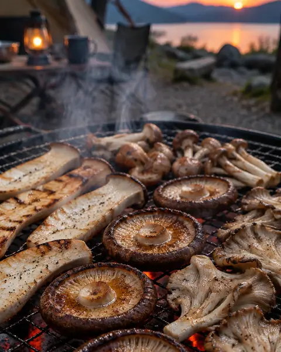
290:54숯불·화로 구이버섯 모둠구이소금 하나로 고기 못지않게10분 · 3인분 · 쉬움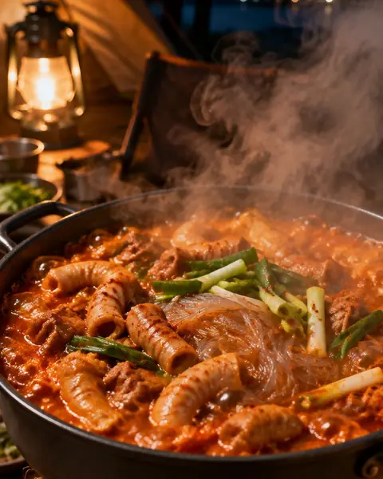
300:56한 냄비 국물캠핑 곱창전골밀키트로 끝내는 진한 국물20분 · 3인분 · 쉬움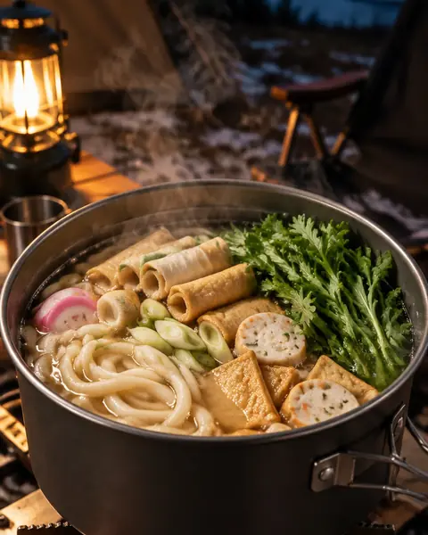
310:56한 냄비 국물캠핑 우동 전골쯔유 한 병이면 끝15분 · 2인분 · 쉬움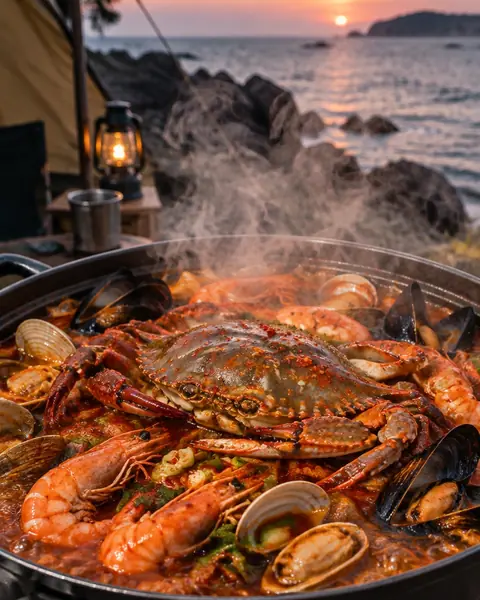
320:52한 냄비 국물캠핑 해물탕한 냄비 가득 바다 맛30분 · 3인분 · 보통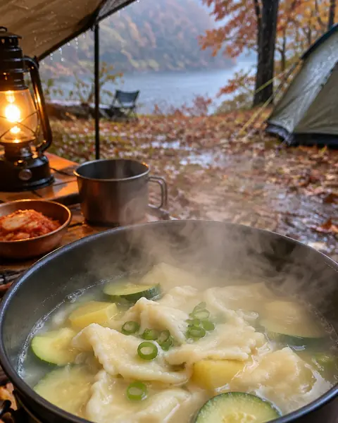
330:53한 냄비 국물캠핑 감자 수제비손으로 뚝뚝, 비 오는 날 한 그릇30분 · 2인분 · 보통 340:53면 요리캠핑 짬뽕 라면해물 듬뿍, 얼큰한 야식15분 · 2인분 · 쉬움
340:53면 요리캠핑 짬뽕 라면해물 듬뿍, 얼큰한 야식15분 · 2인분 · 쉬움 350:51밥·볶음밥캠핑 누룽지탕추운 아침, 물만 부으면 끝10분 · 2인분 · 쉬움
350:51밥·볶음밥캠핑 누룽지탕추운 아침, 물만 부으면 끝10분 · 2인분 · 쉬움 360:57더치오븐·호일 요리더치오븐 찜닭당면까지 쫄깃하게40분 · 3인분 · 보통
360:57더치오븐·호일 요리더치오븐 찜닭당면까지 쫄깃하게40분 · 3인분 · 보통 370:54더치오븐·호일 요리캠핑 갈비찜특별한 날, 더치오븐으로40분 · 4인분 · 보통
370:54더치오븐·호일 요리캠핑 갈비찜특별한 날, 더치오븐으로40분 · 4인분 · 보통 380:52모닥불 간식·디저트숯불 가래떡 구이겉바속쫀 겨울 간식10분 · 3인분 · 쉬움
380:52모닥불 간식·디저트숯불 가래떡 구이겉바속쫀 겨울 간식10분 · 3인분 · 쉬움 390:52아이와 함께캠핑 치즈 퐁듀쭈욱 늘어나는 겨울 간식15분 · 3인분 · 쉬움
390:52아이와 함께캠핑 치즈 퐁듀쭈욱 늘어나는 겨울 간식15분 · 3인분 · 쉬움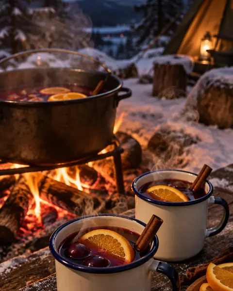
400:53따뜻한 음료무알콜 뱅쇼아이도 함께 마시는 따뜻한 한 잔20분 · 4인분 · 쉬움 410:55따뜻한 음료캠핑 드립 커피아침 안개 속 한 잔10분 · 2인분 · 쉬움
410:55따뜻한 음료캠핑 드립 커피아침 안개 속 한 잔10분 · 2인분 · 쉬움 420:54밥·볶음밥캠핑 김치볶음밥고기 굽던 팬 그대로15분 · 2인분 · 쉬움
420:54밥·볶음밥캠핑 김치볶음밥고기 굽던 팬 그대로15분 · 2인분 · 쉬움 430:55밥·볶음밥삼겹살 볶음밥고기 다 먹은 팬의 2차전10분 · 2인분 · 쉬움
430:55밥·볶음밥삼겹살 볶음밥고기 다 먹은 팬의 2차전10분 · 2인분 · 쉬움 440:55밥·볶음밥화로 구운 주먹밥한 손에 쏙, 겉바속촉10분 · 4인분 · 쉬움450:56밥·볶음밥캠핑 카레라이스한 냄비로 여럿이 든든하게25분 · 3인분 · 쉬움460:55밥·볶음밥캠핑 오므라이스폭신한 계란 이불20분 · 2인분 · 보통
440:55밥·볶음밥화로 구운 주먹밥한 손에 쏙, 겉바속촉10분 · 4인분 · 쉬움450:56밥·볶음밥캠핑 카레라이스한 냄비로 여럿이 든든하게25분 · 3인분 · 쉬움460:55밥·볶음밥캠핑 오므라이스폭신한 계란 이불20분 · 2인분 · 보통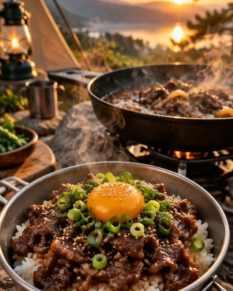
470:57밥·볶음밥캠핑 불고기 덮밥얼려 온 양념 고기로 뚝딱15분 · 2인분 · 쉬움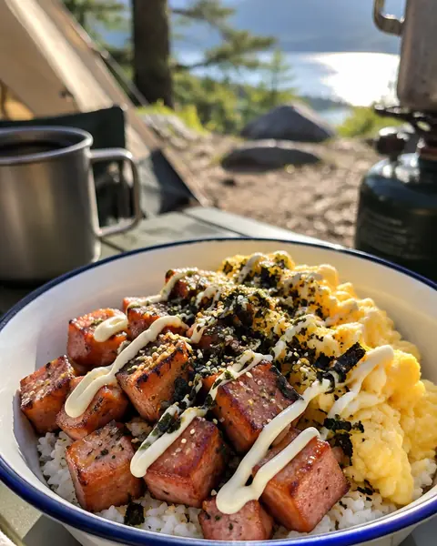
480:55밥·볶음밥스팸 마요 덮밥통조림 하나로 냉장 걱정 끝10분 · 2인분 · 쉬움 490:51아침·간편식캠핑 프렌치토스트버터 향 가득한 아침10분 · 2인분 · 쉬움
490:51아침·간편식캠핑 프렌치토스트버터 향 가득한 아침10분 · 2인분 · 쉬움 500:54아침·간편식모닥불 핫샌드치즈 쭉, 바삭하게 눌러 굽기10분 · 2인분 · 쉬움
500:54아침·간편식모닥불 핫샌드치즈 쭉, 바삭하게 눌러 굽기10분 · 2인분 · 쉬움 510:54아침·간편식베이컨 에그 스크램블팬 하나, 아침 10분10분 · 2인분 · 쉬움
510:54아침·간편식베이컨 에그 스크램블팬 하나, 아침 10분10분 · 2인분 · 쉬움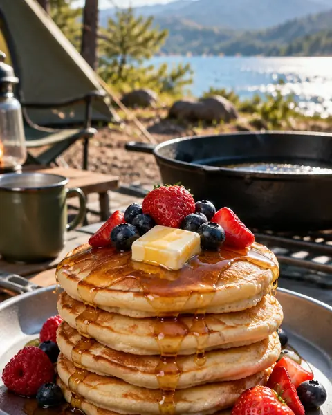
520:54아침·간편식캠핑 팬케이크폭신하게 부푸는 아침15분 · 3인분 · 쉬움 530:54더치오븐·호일 요리더치오븐 통닭구이위아래 숯으로 오븐처럼60분 · 4인분 · 어려움
530:54더치오븐·호일 요리더치오븐 통닭구이위아래 숯으로 오븐처럼60분 · 4인분 · 어려움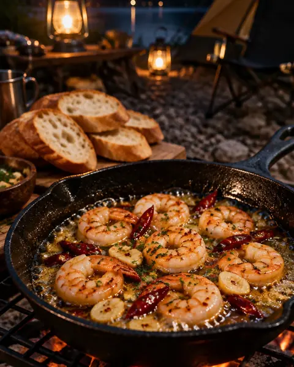
540:50더치오븐·호일 요리캠핑 감바스팬째 즐기는 마늘 새우15분 · 2인분 · 쉬움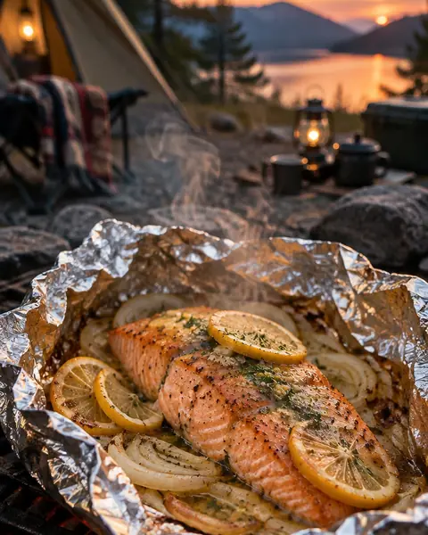
550:53더치오븐·호일 요리호일 연어구이설거지 없는 버터 연어20분 · 2인분 · 쉬움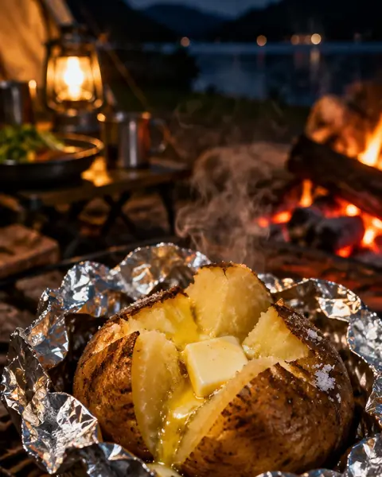
560:53더치오븐·호일 요리호일 감자 버터구이숯불 속에 묻어 두면 끝40분 · 4인분 · 쉬움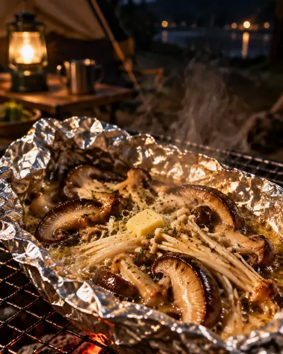
570:54더치오븐·호일 요리호일 버섯 버터구이호일째 먹는 간단 안주15분 · 2인분 · 쉬움580:53더치오븐·호일 요리캠핑 폭립뼈에서 쏙 빠지는 부드러움70분 · 3인분 · 어려움 590:55꼬치·바비큐모둠 꼬치구이알록달록 줄줄이20분 · 4인분 · 쉬움
590:55꼬치·바비큐모둠 꼬치구이알록달록 줄줄이20분 · 4인분 · 쉬움 600:52꼬치·바비큐숯불 닭꼬치반짝반짝 데리야끼20분 · 3인분 · 쉬움
600:52꼬치·바비큐숯불 닭꼬치반짝반짝 데리야끼20분 · 3인분 · 쉬움 610:52꼬치·바비큐캠핑 소떡소떡아이들 최애 꼬치10분 · 4인분 · 쉬움
610:52꼬치·바비큐캠핑 소떡소떡아이들 최애 꼬치10분 · 4인분 · 쉬움 620:53꼬치·바비큐숯불 새우 꼬치껍질째 구워 톡톡10분 · 3인분 · 쉬움
620:53꼬치·바비큐숯불 새우 꼬치껍질째 구워 톡톡10분 · 3인분 · 쉬움 630:51꼬치·바비큐캠핑 채소 꼬치고기 옆 알록달록 단짝15분 · 3인분 · 쉬움640:51꼬치·바비큐캠핑 떡꼬치학교 앞 추억의 맛10분 · 3인분 · 쉬움
630:51꼬치·바비큐캠핑 채소 꼬치고기 옆 알록달록 단짝15분 · 3인분 · 쉬움640:51꼬치·바비큐캠핑 떡꼬치학교 앞 추억의 맛10분 · 3인분 · 쉬움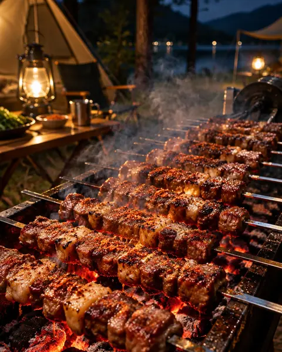
650:53꼬치·바비큐캠핑 양꼬치숯불 위에서 지글지글15분 · 3인분 · 쉬움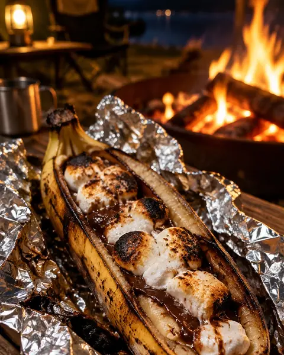
660:53모닥불 간식·디저트모닥불 바나나 보트초콜릿이 사르르10분 · 4인분 · 쉬움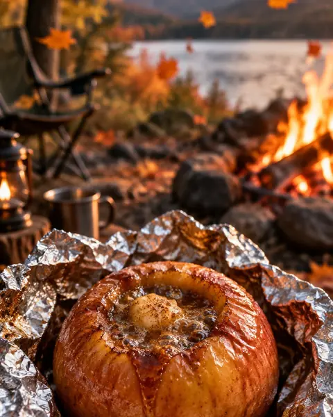
670:52모닥불 간식·디저트모닥불 구운 사과시나몬 향 가을 디저트20분 · 4인분 · 쉬움 680:52아이와 함께또띠아 미니 피자아이가 직접 토핑해요15분 · 4인분 · 쉬움
680:52아이와 함께또띠아 미니 피자아이가 직접 토핑해요15분 · 4인분 · 쉬움 690:51아이와 함께캠핑 핫도그숯불 소시지를 빵에 쏙10분 · 4인분 · 쉬움
690:51아이와 함께캠핑 핫도그숯불 소시지를 빵에 쏙10분 · 4인분 · 쉬움 700:53아이와 함께캠핑 떡볶이냄비 하나로 뚝딱15분 · 3인분 · 쉬움
700:53아이와 함께캠핑 떡볶이냄비 하나로 뚝딱15분 · 3인분 · 쉬움 710:54아이와 함께캠핑 계란말이사각팬 하나로 도톰하게10분 · 3인분 · 보통
710:54아이와 함께캠핑 계란말이사각팬 하나로 도톰하게10분 · 3인분 · 보통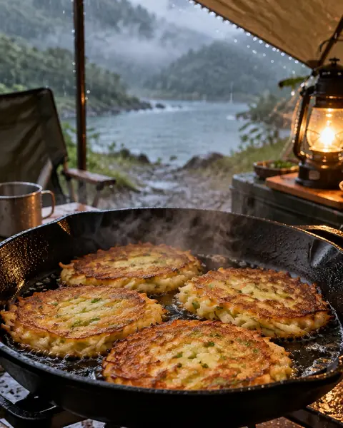
720:55아이와 함께캠핑 감자전비 오는 날 타프 아래20분 · 2인분 · 보통 730:53안주·야식소시지 야채볶음케첩 하나로 뚝딱10분 · 2인분 · 쉬움
730:53안주·야식소시지 야채볶음케첩 하나로 뚝딱10분 · 2인분 · 쉬움 740:54안주·야식골뱅이 무침불 없이 버무리기만10분 · 2인분 · 쉬움
740:54안주·야식골뱅이 무침불 없이 버무리기만10분 · 2인분 · 쉬움 750:52안주·야식캠핑 두부김치따끈한 두부에 볶은 김치15분 · 2인분 · 쉬움
750:52안주·야식캠핑 두부김치따끈한 두부에 볶은 김치15분 · 2인분 · 쉬움 760:53안주·야식캠핑 폭탄 계란찜뚜껑 열면 봉긋10분 · 2인분 · 쉬움
760:53안주·야식캠핑 폭탄 계란찜뚜껑 열면 봉긋10분 · 2인분 · 쉬움 770:52안주·야식석쇠 노가리 구이가볍고 안 상하는 안주5분 · 2인분 · 쉬움
770:52안주·야식석쇠 노가리 구이가볍고 안 상하는 안주5분 · 2인분 · 쉬움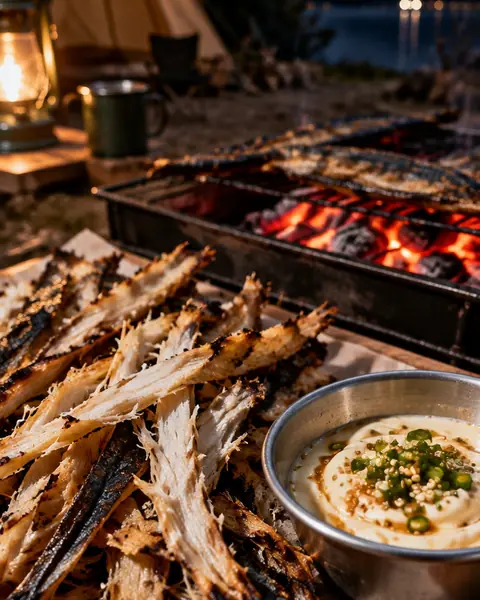
780:54안주·야식석쇠 먹태 구이청양 마요에 콕5분 · 2인분 · 쉬움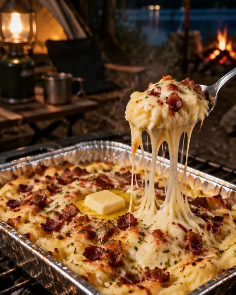
790:53안주·야식호일 치즈 감자치즈가 쭉 늘어나요20분 · 3인분 · 쉬움800:52안주·야식캠핑 나초 치즈팬 하나에 녹아내리는 치즈10분 · 3인분 · 쉬움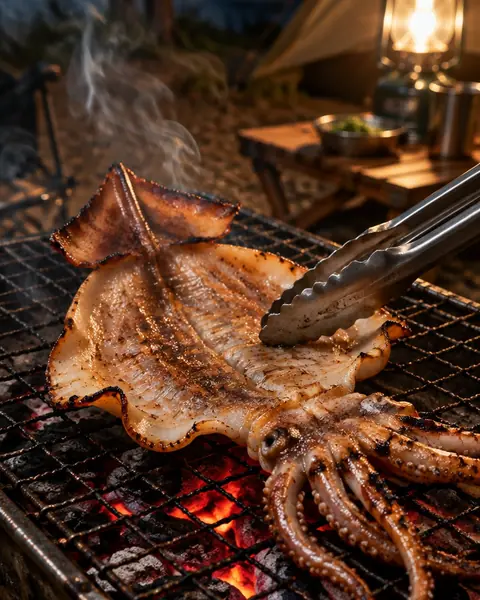
810:55안주·야식반건조 오징어 숯불구이쫄깃하게, 불 조절이 핵심10분 · 2인분 · 쉬움 820:52면 요리짜파게티 볶음물 버리지 않고 졸이기10분 · 2인분 · 쉬움
820:52면 요리짜파게티 볶음물 버리지 않고 졸이기10분 · 2인분 · 쉬움 830:54면 요리비빔면 & 삼겹살여름 캠핑 최고 조합15분 · 2인분 · 쉬움
830:54면 요리비빔면 & 삼겹살여름 캠핑 최고 조합15분 · 2인분 · 쉬움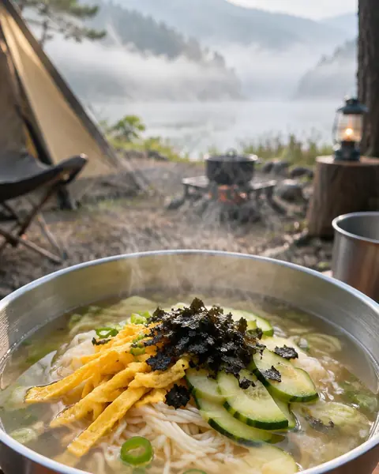
840:56면 요리캠핑 잔치국수쌀쌀한 아침 한 그릇15분 · 2인분 · 쉬움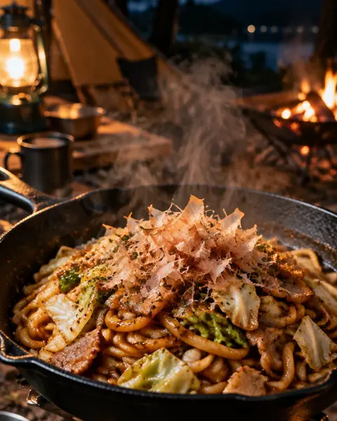
850:53면 요리캠핑 볶음 우동팬 하나로 차례차례15분 · 2인분 · 쉬움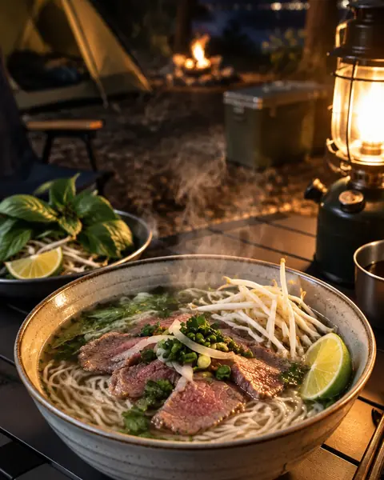
860:52면 요리캠핑 쌀국수숙주 듬뿍 따끈한 국물15분 · 2인분 · 쉬움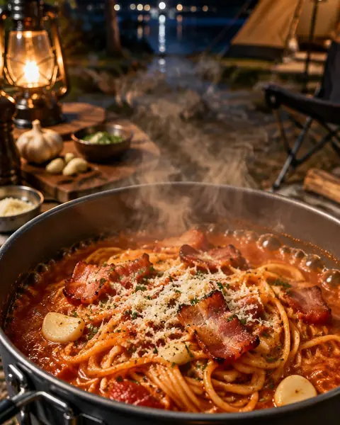
870:54면 요리캠핑 원팬 파스타냄비 하나로 한 번에20분 · 2인분 · 보통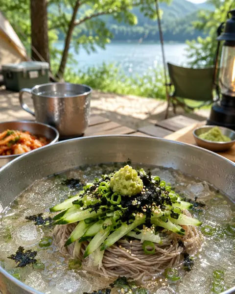
880:53면 요리캠핑 냉메밀얼음 동동 여름 한 끼15분 · 2인분 · 쉬움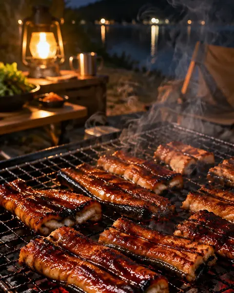
890:52숯불·화로 구이캠핑 장어구이여름 보양 숯불구이20분 · 2인분 · 보통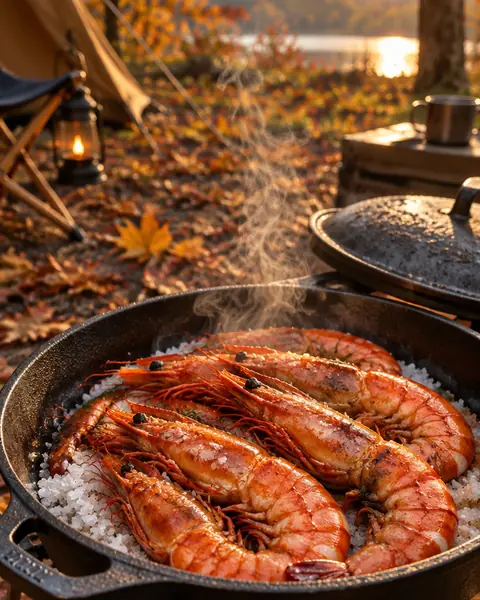
900:55숯불·화로 구이대하 소금구이가을 캠핑 제철15분 · 2인분 · 쉬움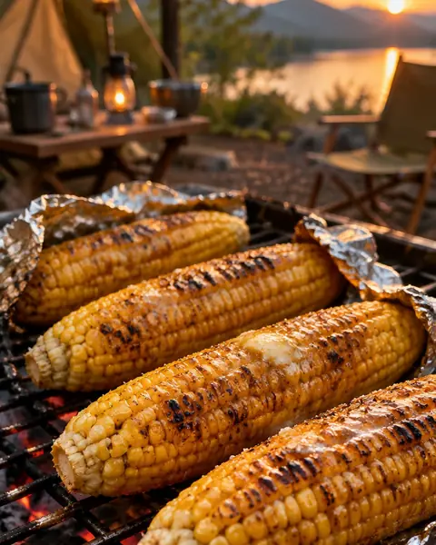
910:54숯불·화로 구이옥수수 버터구이버터 향 솔솔 여름 간식20분 · 2인분 · 쉬움 920:51계절 특선봄 주꾸미 샤브봄 바다의 선물15분 · 2인분 · 쉬움
920:51계절 특선봄 주꾸미 샤브봄 바다의 선물15분 · 2인분 · 쉬움 930:49계절 특선여름 수박화채한여름 얼음 동동10분 · 4인분 · 쉬움
930:49계절 특선여름 수박화채한여름 얼음 동동10분 · 4인분 · 쉬움 940:50계절 특선여름 콩국수고소한 콩물 한 그릇15분 · 2인분 · 쉬움
940:50계절 특선여름 콩국수고소한 콩물 한 그릇15분 · 2인분 · 쉬움 950:50계절 특선가을 전어구이굽는 냄새가 반15분 · 2인분 · 쉬움
950:50계절 특선가을 전어구이굽는 냄새가 반15분 · 2인분 · 쉬움 960:54캠핑 요리 기본기화로 숯 피우기캠핑 요리의 시작20분 · 1인분 · 쉬움
960:54캠핑 요리 기본기화로 숯 피우기캠핑 요리의 시작20분 · 1인분 · 쉬움 970:52캠핑 요리 기본기캠핑 고기 보관법마지막 날까지 싱싱하게10분 · 1인분 · 쉬움
970:52캠핑 요리 기본기캠핑 고기 보관법마지막 날까지 싱싱하게10분 · 1인분 · 쉬움 980:57캠핑 요리 기본기아이스박스 정리법뒤적이지 않게10분 · 1인분 · 쉬움
980:57캠핑 요리 기본기아이스박스 정리법뒤적이지 않게10분 · 1인분 · 쉬움 990:54캠핑 요리 기본기설거지 줄이는 요리법캠핑의 진짜 숙제5분 · 1인분 · 쉬움
990:54캠핑 요리 기본기설거지 줄이는 요리법캠핑의 진짜 숙제5분 · 1인분 · 쉬움 1000:53캠핑 요리 기본기남은 음식·기름 처리다음 사람도 기분 좋게5분 · 1인분 · 쉬움
1000:53캠핑 요리 기본기남은 음식·기름 처리다음 사람도 기분 좋게5분 · 1인분 · 쉬움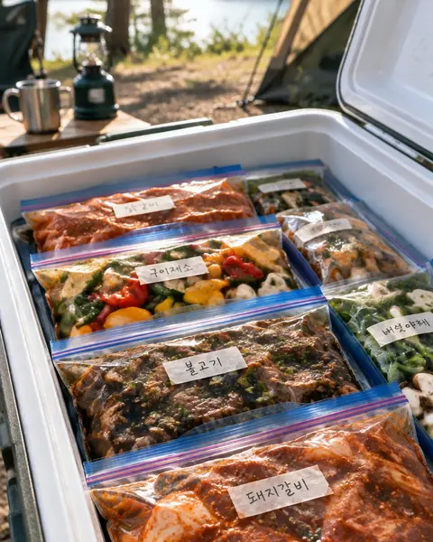
1010:56캠핑 요리 기본기지퍼백 밀프렙캠핑장에선 굽기만20분 · 1인분 · 쉬움찾는 레시피가 없어요. 다른 재료로 찾아보세요.